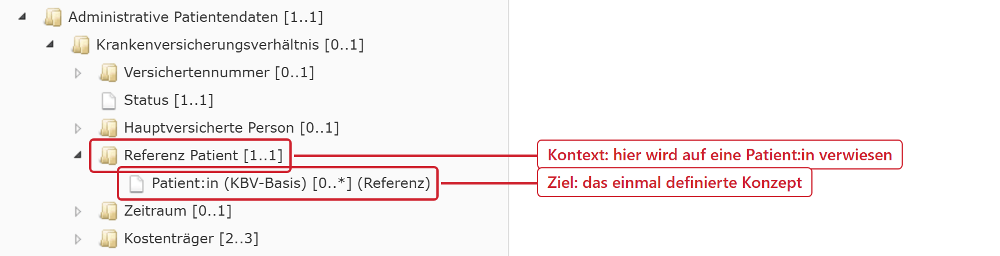
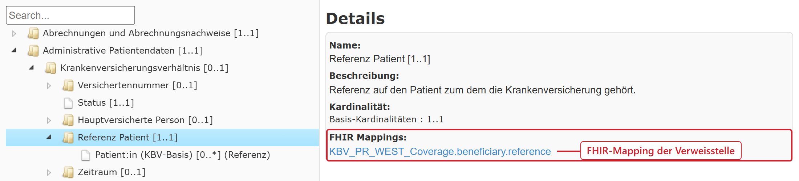
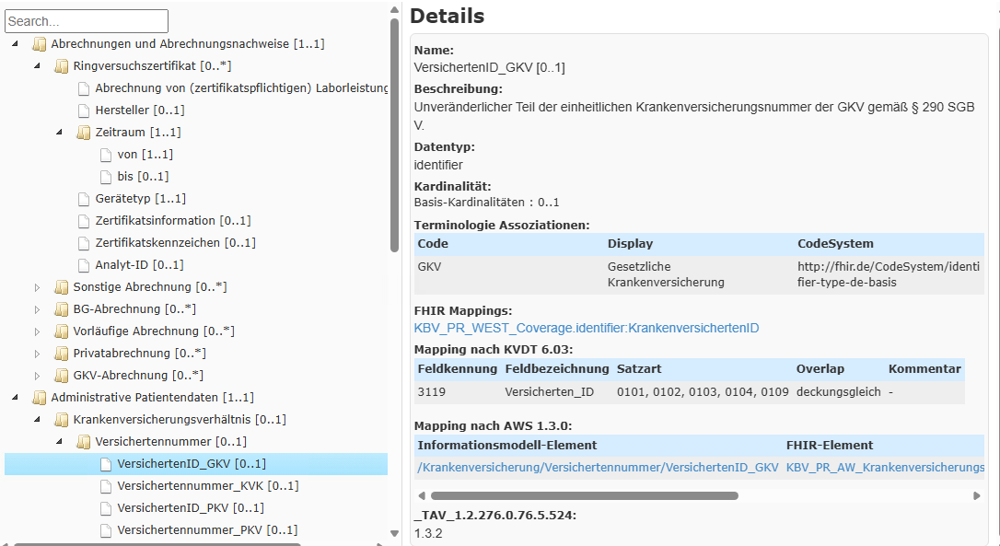

Das Informationsmodell beschreibt die fachlichen Inhalte, die bei einem Wechsel des Praxisverwaltungssystems übertragen werden können. Es ist die fachliche Grundlage der FHIR-Profile dieses Leitfadens: Jedes Element benennt eine Information, beschreibt ihre Bedeutung und verweist auf die Stelle im FHIR-Profil, an der sie umgesetzt ist.
Unterhalb eines thematischen Abschnitts folgen die fachlichen Konzepte (z. B. „Krankenversicherungsverhältnis“) und darunter ihre Bestandteile. Ein Element ist entweder
Viele Konzepte werden an mehreren Stellen benötigt, etwa Patient:in, Begegnung oder
behandelnde Person. Sie sind im Modell nur einmal definiert. An den Stellen, an denen sie
gebraucht werden, steht eine **Referenz**:

So wird eine Referenz gelesen:
Im FHIR-Mapping entspricht eine Referenz in der Regel einem Reference(...)-Element. Das Mapping der Referenzstelle nennt das Zielprofil.

</div>Ein Klick auf ein Element im Baum öffnet die Details. Nicht jedes Element hat alle Angaben.

| Angabe | Bedeutung | Beispiel |
|---|---|---|
| Name | benennt das Element. Ein Element ist entweder eine Gruppe, die andere Elemente zusammenfasst und selbst keinen Wert trägt, oder ein Item, das einen Wert trägt. Zusätze im Namen:
|
VersichertenID_GKV [0..1]Patient:in (KBV-Basis) [0..*] |
| Beschreibung | beschreibt den Inhalt des Elementes. Die Beschreibung ist die fachliche Definition: was gemeint ist und womit das Element befüllt wird. Bei Gruppen beschreibt sie, was zusammengefasst wird. | „Unveränderlicher Teil der einheitlichen Krankenversicherungsnummer der GKV gemäß § 290 SGB V.“ |
| Rationale | enthält in besonderen Fällen eine Begründung, warum das Element in der vorliegenden Form in das Informationsmodell aufgenommen wurde, z. B. durch Referenzen auf externe Spezifikationen. Häufige Quellen sind die Technische Anlage zu Anlage 4a (BMV-Ä), der HL7®-Leitfaden Basis DE oder das Valueset, aus dem die Werteliste stammt. Links führen zur Quelle. |
Geburtsdatum der Patient:in: „Technische Anlage zu Anlage 4a (BMV-Ä) V1.12“ |
| Datentyp | gibt den Datentyp an, mit dem das Element befüllt wird. Nur Items haben einen Datentyp, Gruppen nicht. Die Datentypen sind fachlich gemeint. Wie ein Wert in FHIR® abgebildet wird, steht im FHIR-Mapping. |
identifier |
| Kardinalität | gibt an, wie häufig in einem bestimmten Anwendungsszenario ein Wert für das Element übermittelt werden darf. Ausgedrückt wird das mit einem minimalen und einem maximalen Wert (min..max). Die Kardinalität gilt innerhalb des übergeordneten Elements. Das Anwendungsszenario heißt „Basis-Kardinalitäten“. Manche Kardinalitäten hängen von einer Bedingung ab. |
Basis-Kardinalitäten : 0..1Das Element darf fehlen und höchstens einmal vorkommen. |
| Terminologie-Assoziation / Wertelisten | enthält einzelne oder mehrere Codes, mit denen dieses Element gefüllt werden kann bzw. muss.
|
Terminologie-Assoziation: GKV„Gesetzliche Krankenversicherung“, http://fhir.de/CodeSystem/identifier-type-de-basis |
| MUSS/KANN/SOLL-Vorgabe | gibt die Umsetzung des Elements in Primärsystemen vor. Das Schlüsselwort nennt die Verbindlichkeit:
Wann eine Vorgabe gilt, steht in ihrem Text. Die Kardinalität ändert sie nicht. |
MUSS, bei Einrichtung/Organisationseinheit (KBV-Basis): „Für die Abbildung einer Betriebsstätte muss die Gruppe “Betriebsstätte” verwendet werden.“ |
| FHIR-Mappings | gibt an, an welcher Stelle in der technischen FHIR®-Spezifikation das Element umgesetzt ist.
Mehr unter Mappings im Informationsmodell. |
KBV_PR_WEST_Coverage.identifier:KrankenversichertenID |
| Weiteres Mapping | mappt auf die zugrundeliegenden Spezifikationen, siehe Darstellung von Mappings. Für jede Spezifikation gibt es eine eigene Tabelle „Mapping nach …“, u. a. AWS 1.3.0, KBV-Basis 1.8.0, KVDT, BDT, EHDS und ePA-Laborbefund. Die Spalte Overlap sagt, wie gut das Ziel zum WEST-Element passt: deckungsgleich, enger oder weiter. Die Mappings sind Orientierungshilfen, keine verbindliche Transformationsvorschrift. Wozu sie dienen und wie sie entstanden sind, steht unter Mappings im Informationsmodell. |
Mapping nach KVDT: Feld 3119„Versicherten_ID“, Satzarten 0101, 0102, 0103, 0104, 0109, deckungsgleich Mapping nach AWS 1.3.0: /Krankenversicherung/Versichertennummer/VersichertenID_GKV, deckungsgleich |
| Weitere Angaben | zusätzliche Informationen zum Element, z. B. die Version eines verwendeten Codesystems, die Herkunft eines Codesystems oder ein zugehöriges Dokument. | Version von UCUM: 2.1 |